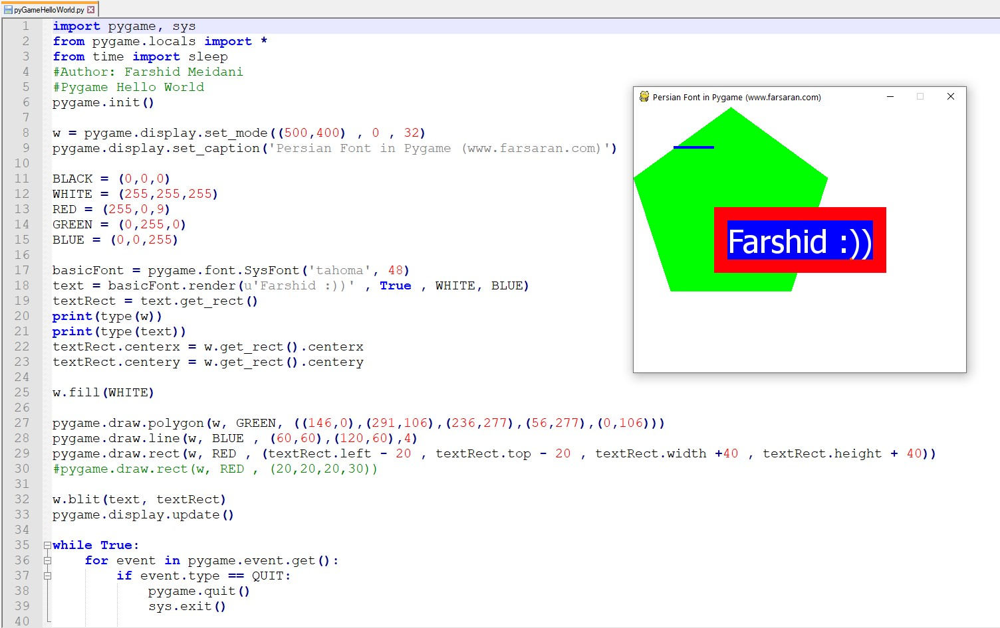
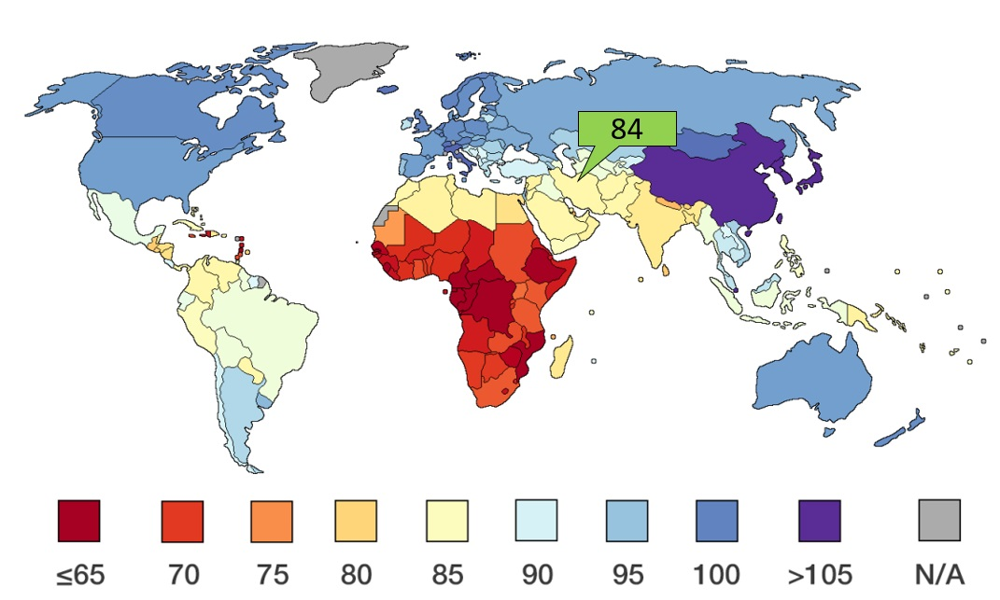

در این نوشته قصد دارم مشاهدات، تجربیات و نظرات خود را در ارتباط با سوالات زیر مطرح سازم و با شما ایدههایی را در جهت ارتقای سطح آموزش کامپیوتر در مدارس برای دانش آموزان در میان بگذارم.
1) چه سرفصلهایی برای آموزش کامپیوتر به نوجوانان مقطع متوسطه (اول یا دوم) مناسب است؟
2) برای تدریس کامپیوتر در مقطع متوسطه چه کتاب و یا سرفصلی مناسب است؟
3) تدریس چه نرم افزار و یا سرفصلی در مقطع متوسطه میتواند برای دانش آموزان مفید و جذاب و آموزنده باشد؟
4) آیا مهارتهای ICDL گزینه مناسبی برای آموزش کامپیوتر به بچهها (دوره دوم ابتدایی و متوسطه اول و یا دوم) است؟
5) حداقل سن مناسب برای شروع آموزش کامپیوتر در مدارس چند سال است؟
تدریس ICDL در مدارس:
باید بگویم که هدف آموزش مهارتهای icdl آشنایی کارکنان دولت با کامپیوتر بود و به نظر تشخیص درستی هم میآمد زیرا در آن سالها (بیش از 10 سال پیش که اوج تدریس icdl بود) کامپیوتر برای بسیاری ناشناخته بود. . اجازه دهید که من تعریفم را از مهارت icdl ارائه کنم:
بنابراین:
الف) icdl فقط یک مهارت است و نه علم و دانش
ب) icdl برای افراد بزرگسال شاغل کاربرد دارد
ج) icdl حداقل سطح مهارت است
با این تعریف که ارائه شد باید بگویم که icdl و آموزش آن برای بچهها و یا نوجوانان:
الف) فاقد هر گونه جذابیت و یا خلاقیتی است.
ب) فاقد کاربرد است.
ج) اساسا از دانش و علم کامپیوتر چیزی نخواهند آموخت.
حداکثر کاربرد تدریس و آموختن icdl برای یک دانش آموز میتواند یادگیری مهارت تایپ و یا پاورپوینت ساختن باشد. باید بگویم که این دستآورد اساسا ناچیز است و هر کسی میتواند این مهارت (تایپ و کار با کیبورد و ...) را از هر کسی (مثلا برادر و یا پدر) در هر سنی و در کوتاهترین زمان بیاموزد. جالب اینجاست که سعی میشود به یک دانش آموز تلقین کنند که یادگیری ساخت پاورپیونت کاری مهم و بزرگ است.
جمع بندی و نتیجه گیری:
تدریس ICDL در مدارس به دلیل نبودن ایده و یا سرفصلهای جایگزین متداول شده است. ICDL از علم و دانش کامپیوتر تهی است و هیچ جذابیتی برای دانش آموزان ندارند. خلق ایدههاه و کارهای خلاقانه در آن به سادگی میسر نیست.
آموزش کامپیوتر برای بچهها در سایر کشورها
نتیجه بررسی و تحقیقات و یافتهها و مشاهدات من از قرار زیر است:
1) در انگستان تدریس علوم کامیپوتر از سرفصلهای اصلی دوره تحصیلی دانش آموزان شده است. (منبع: مجله Raspberry pi)
به زبان فنیتر در کشورهای توسعه یافته تلاش میشود تا تدریس Computer Science (علوم کامپیوتر) جایگزین تدریس ICT (فاوا: فناوری ارتباطات و اطلاعات) یعنی همان رویکرد word و PowerPoint شود.(نگاه کنید به اینجا)
2) برای آموزش کامپیوتر به کودکان (مقطع ابتدایی) در ابتدا از نرم افزار scratch شروع میکنند و سپس (ظاهرا بعد از چند سال) زبان برنامه نویسی پایتون تدریس میشود.(منبع: فیلمهای کنفرانس پایتون در یوتیوب)
3) زبان برنامه نویسی اسکرچ (که توسط تیم دانشگاه mit به رایگان ساخته شده است) به همراه سازمان raspberry pi foundation که سخت افزار rapsbeery pi (یک کامپیوتر بسیار ارزان و کوچک و مناسب برای آموزش کودکان) تاثیر جهانی و بسیار بزرگی را در حوزه آموزش کامپیوتر برای کودکان و نوجوانان ایجاد کردهاند.
4) سایتهای و شرکتهای بسیار بزرگی مانند شرکت اسباب بازی لگو، گوگل و مایکروسافت در حوزه آموزش برنامه نویسی به کودکان دنباله رو / حامی این دو منبع یاد شده (scratch و raspberry pi) هستند.
5) در هیچ کنفرانس و یا منبع آموزش و یا کتاب آموزشی که ویژه آموزش کامپیوتر برای کودکان / نوجوانان است کوچکترین اشارهای و یا اثری از icdl و یا windows و یا word و یا powerpoint نخواهید یافت.
جمع بندی و نتیجه گیری:
در حوزه آموزش کودکان و انتخاب سرفصل و یا محتوای آموزشی و حتی مثالها، زبان برنامه نویسی scratch و سخت افزار raspberry pi کارهای اساسی انجام دادهاند و پیشنهاد میشود که با توجه به تخصص، گستردگی فعالیت و تجربه جهانی این دو منبع، نیازی به خلق دوباره چرخ نیست و باید که از این منابع رایگان و آزاد استفاده شود.
در ابتدای آموزش زبان برنامه نویسی اسکرچ (scratch) تدریس شود و سپس (پیشنهاد میشود با فاصلهای 2 ساله) زبان برنامه نویسی پایتون تدریس شود.
سرفصل پیشنهادی برای آموزش کامپیوتر در مدارس ایران
اگر برای آموزش کامپیوتر در مدارس به دنبال تحقق اهدافی مانند 1) خلاقیت 2) دانش کامپیوتر باشیم، ICDL نمیتواند گزینهای مناسب باشد. بنابراین با توجه به تجربههای جهانی در این زمینه ابتدا باید آموزش کامپیوتر از زبان برنامه نویسی اسکرچ (Scratch) شروع شود و سپس زبان برنامه نویسی پایتون (python) تدریس شود.
در صورتی که تاکنون کلاس کامپیوتر و برنامه نویسی برای دانش آموزان برگزار نشده است، پیشنهاد میشود که ابتدا اسکرچ در مدارس ( دبیرستانهای متوسطه اول- دوم) تدریس شود و اگر دانش آموزان با اسکرچ در سالها قبل آشنا شدهاند، برنامه نویسی به زبان پایتون تدریس گردد.
البته ممکن است این ایراد مطرح شود که اسکرچ برای آموزش به کودکان ساخته شده است و برای دانش آموزان متوسطه اول و یا دوم کودکانه است. در پاسخ به این ایراد باید موارد زیر را در نظر گرفت:
1) زبان پایتون و معرفی ماژولهای آن مانند turtle و ... همراه با معرفی دستورات اولیه برنامه نویسی مانند شرطها، حلقهها و ... سرفصلهای سنگینی محسوب میشود و تدریس آنها در مدت زمانهایی مانند 30 ساعت میسر نخواهد شد.
2) نوشتن برنامههای جذاب/بازی در آغاز آموزش پایتون دشوار است و بسیار محتمل است که دانش آموزان انگیزه خود را از دست بدهند.
به عنوان نمونه در تصویر زیر یک برنامه بسیار ساده پایتون با ماژول pygame را میتوانید همراه با خروجی آن مشاهده نمایید.

3) در اسکرچ میتوان مسالههای نسبتا پیچیده را مطرح و حل نمود. مانند شبیه سازی برخورد دو جسم و یا شبیه سازی چرخش یک مکعب و یا حتی ساختن یک Chat room (جالب است بدانید که ساخت char room با اسکرچ ممنوع است)
4) با توجه به نمودارهای و آمار سایت اسکرچ ، تا سن 18 سال از مخاطبین اصلی اسکرچ هستند.
5) در حوزه تدریس پایتون برای دانش آموزان سرفصلها و یا کتاب فارسی مناسب و متنوع و همچنین معلمین با تجربه کافی را در دسترس نداریم.
حداقل سن کودکان برای شروع یادگیری کامپیوتر ؟!
1) در سایت اسکرچ قید شده است که اسکرچ برای سنین 8 الی 16 سال طراحی شده است و البته افراد در هر گروه سنی از آن استفاده میکنند.
2) در نمودار آمار سایت اسکرچ، میتوانید ببیند که بیشترین کاربران اسکرچ 12 ساله هستند. توجه داشته باشید که تقریبا نیمی از کاربران اسکرچ در آمریکا هستند.

3) ضریب هوشی کشور ایران عدد 84 است و در حالی است که کشور آمریکا 98 و چین 105 است. منبع

در صورتی که به موارد بالا شیوه آموزش در ایران را اضافه کنیم، به نظر میآید که در مورد حداقل سن برای شروع آموزش کامپیوتر (یا برنامه نویسی) در مدارس باید تحقیق و بررسی بیشتری شود و حتما باید نظر روانشناسان باتجربه و صاحب نظر روانشناسی تربیتی را جویا شد. همچنین باید در پشتوانه علمی و پژوهشی وب سایتها و یا آموزشگاههایی که سنین 5 یا 6 سال را برای شروع یادگیری کامپیوتر پیشنهاد میکنند، تردید کرد.
با توجه به احتمال آسیبهایی که محتمل است یک جریان آموزشی نامناسب به بچهها وارد کند، پیشنهاد میشود که حداقل سن کودکان برای شروع کامپیوتر را همان 9 سال در نظر بگیریم و شاید بتوان سن مناسب را 12 ساله در پایه ششم دبستان قرار میگیرند. جالب است بدانید که در کتاب درسی پایه ششم دبستان، آموزش کامپیوتر گنجانده شده است. (این اعداد صرفا پیشنهاد نویسنده مقاله است)